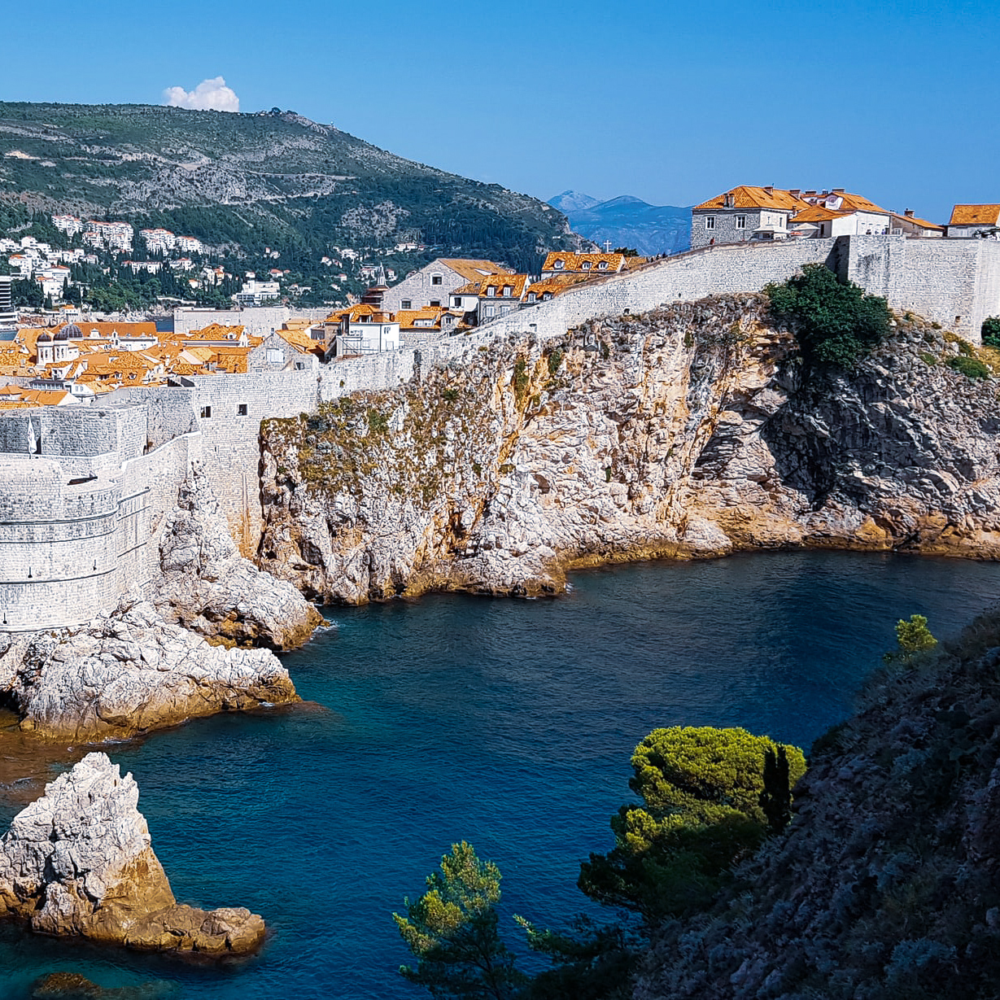
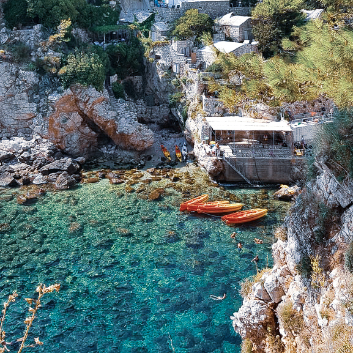
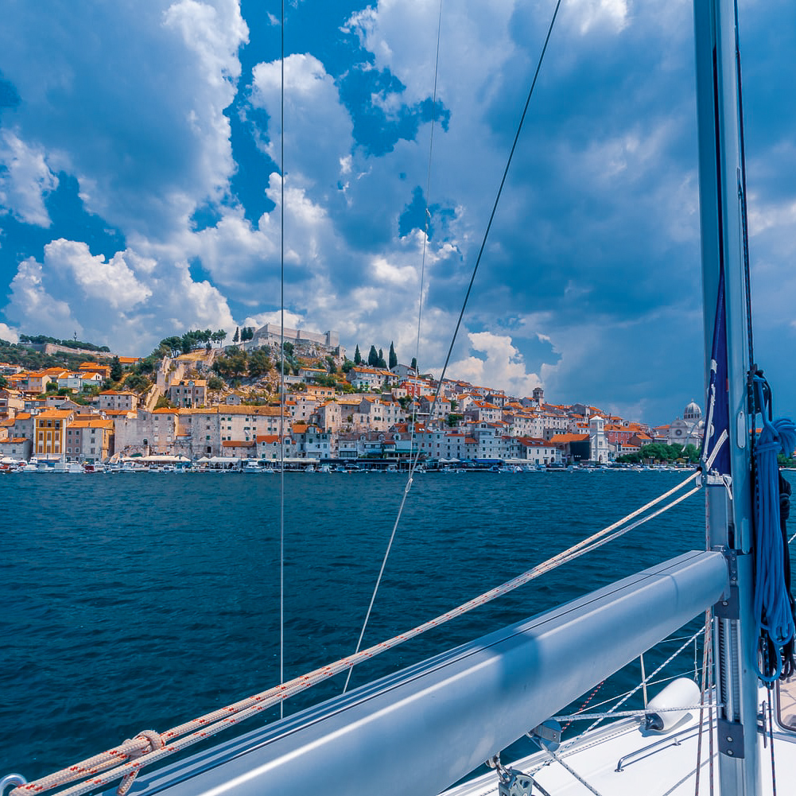
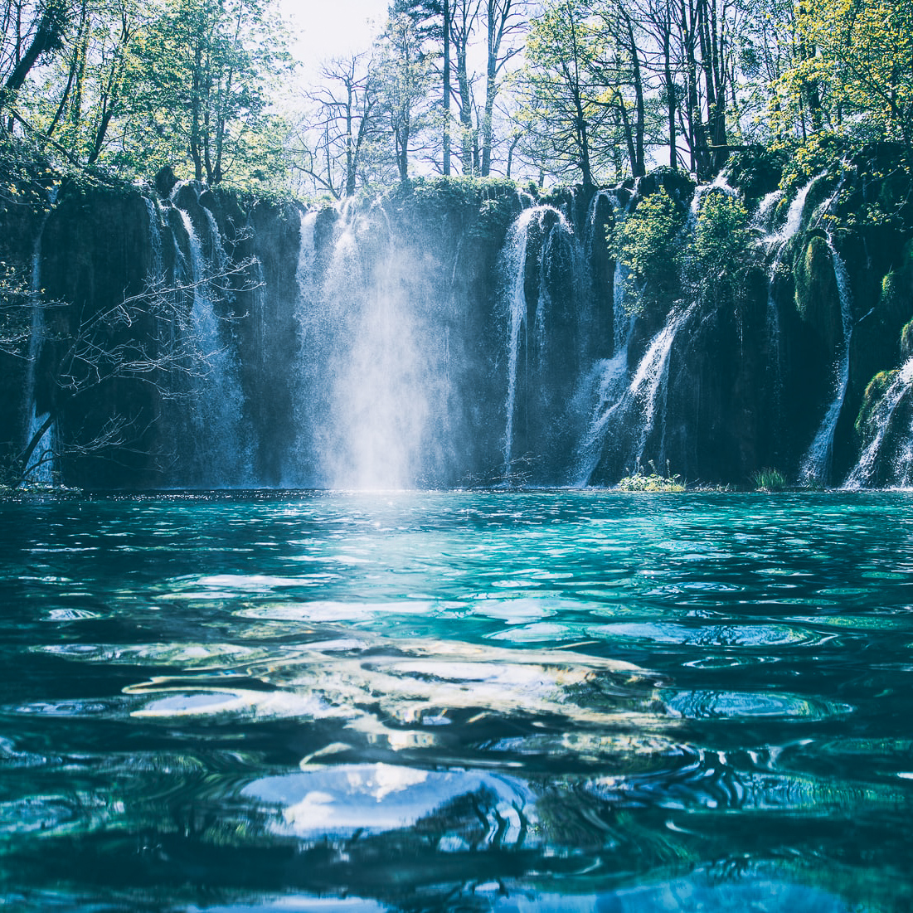
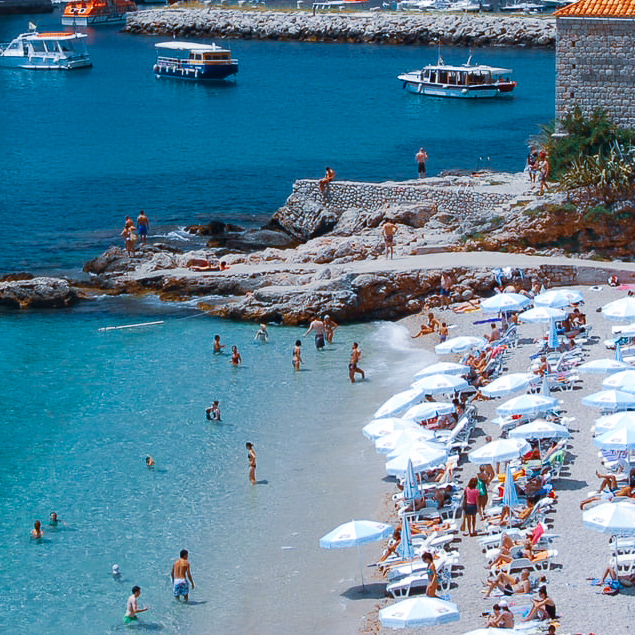
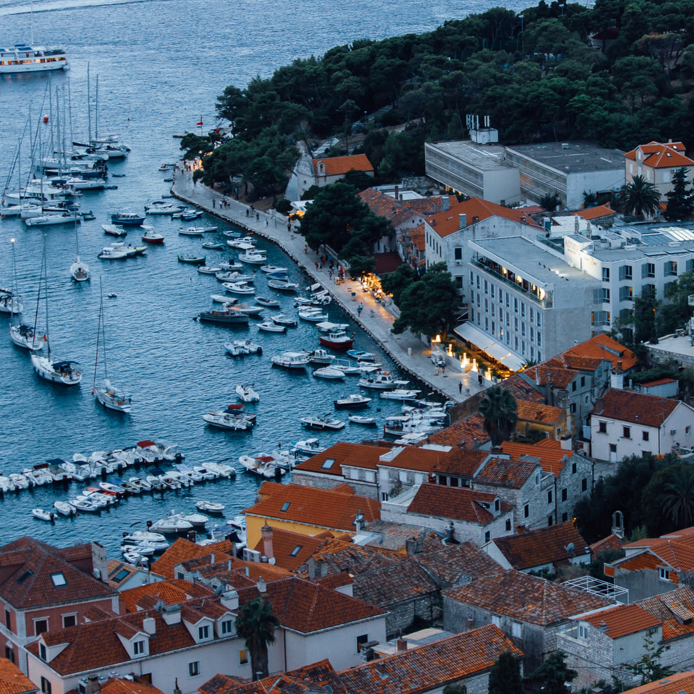
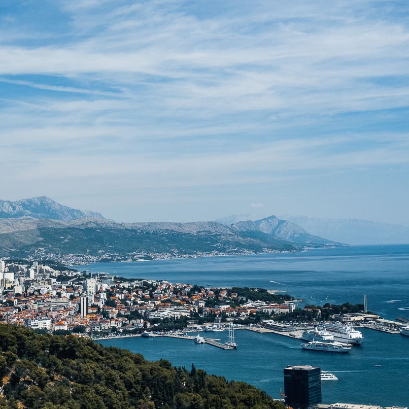

Accommodation 7 nights onboard a 12 person yacht. Single or duo cabins are available.
Food All meals onboard are catered for. Travellers may choose to purchase their own lunches on shore.
Activities All activities in the itinerary are included. Travellers may choose to purchase extra activities (eg. reef snorkelling, parasailing)
Day 1 → Trogir Jump on board and meet your crew. Explore the local township and gorgeous architecture of the Trogir marina before celebrating your first night in true Croatian style.

Day 2 → Vis Make your way around the beautiful town of Vis on our rental scooters. Enjoy the sights and local cuisine before heading up to watch a sunset you’ve only seen in movies. It’s not yacht week without a party and Day 2 wraps up with a tropical retro theme.

Day 3 → Hvar Your skipper will be your best friend as they take you exploring around the surrounding islands of Hvar. Head to shore to discover the beautiful little quirks that the seaside village Milna has to offer.

Day 4 → Hvar Start the day off the right way and join your crew for a morning exercise. Day 4 is for unwinding and whether you find yourself discovering hidden caves or relaxing onboard, you’ll love what is in store for you. Finish the day with a Riviera Club themed party at Carpe Diem Beach.

Day 5 → Bol The famous ‘Golden Cape’ beach is on the agenda with an afternoon of beach activities. Relax by the ocean in a picturesque yoga session or verse your crew in a game of beach volleyball. Day 5 ends on a high with the open-air club 585 putting on a show featuring world renowned DJ’s.

Day 6 → Natural Bay The true yacht week begins on Day 6 with Regatta day finally taking place. Celebrate by dropping anchor in the crystal clear waters of the Natural Bay and join other yachts in party central, The Buzz. The party doesn’t stop and you’ll find yourselves dancing until the sun comes up.

Day 7 → Split Spend the day sailing through Croatia’s waters on your way to the final destination; Split! Explore what this iconic town has to offer and kick back in preparation for the last night. Day 7 features the most awaited party of all, and be sure to dress to impress!

Learn About Croatia
Population 4.154 million •
Language Croatian and English •
Location Adriatic Sea, between Central and Southeast Europe •
Traditional Foods Crni Rizot (Black Risotto) •
Claim to Fame Multiple landscapes featured in the popular Game Of Thrones series